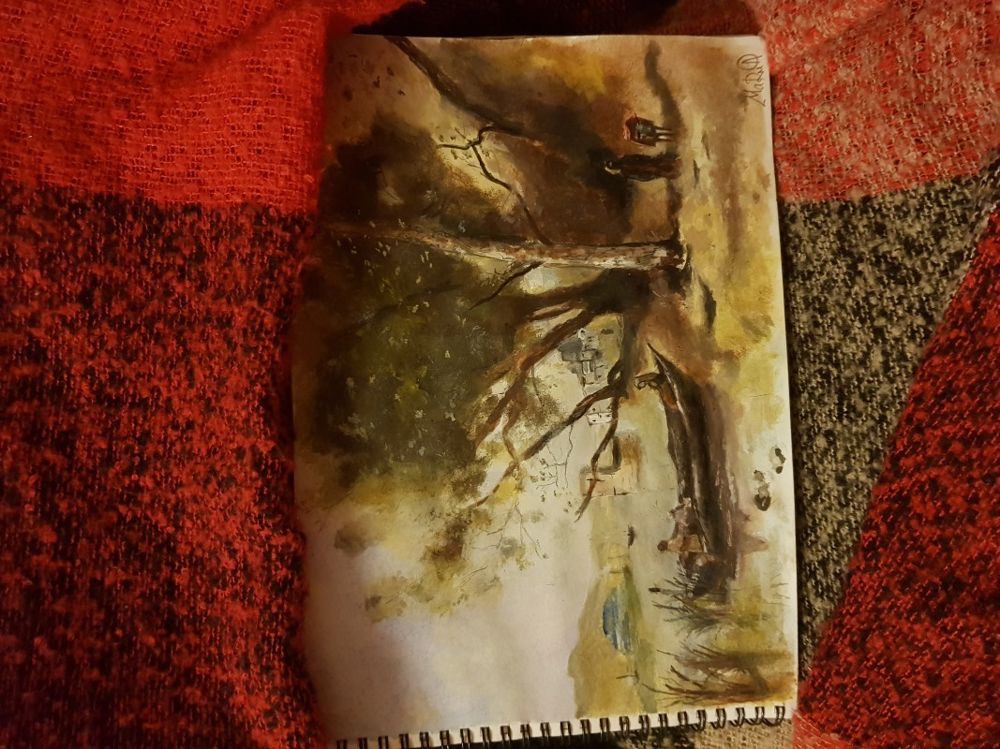
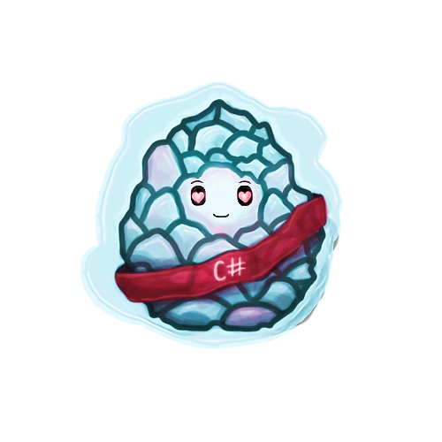

Я знаю точно - невозможное возможно.
С этим девизом я стала преподавателем МШП!
Но моя маленькая тайна в том, что преподавать - это любимое хобби.
Моя основная деятельность - биоинженерия. Эта профессия сложная и не очень весёлая, поэтому лучше расскажу о своём "free" пространстве.
Будучи студентом я пыталась охватить всё в промежутках между зачётами и экзаменами.
Так и зародилась эпопея из тренировок и соревнований.
Помимо этого я люблю рисовать, хоть и делаю это редко.
Сейчас творчество мне очень помогает для объяснения сложного материала или создания шишек для особенно старательных учеников.

Но больше всего я ценю время проведённое с семьёй и друзьями.
Мы редко видимся из-за напряжённого графика, поэтому каждая встреча как праздник.
И напоследок мой талисман - гусь Арсений, он сопровождает меня в командировках, поддерживает на сессиях и страхует в машине.
Если вы хотите узнать больше, то здесь прячутся мои контактные данные